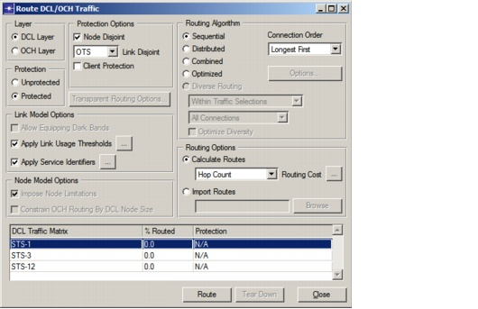

Routing > Route DCL/OCH Traffic Dialog Box
Route DCL/OCH Traffic Dialog Box
After you create one or more DCL or OCH traffic matrices, you can route these matrices using the Route dialog box (Design > Route DCL/OCH Traffic). You can also use this dialog box to tear down partially routed matrices. The Traffic Matrix table lists unrouted or partially routed matrices. Choose one or more traffic matrices from the Traffic Matrix table, select the appropriate options, and click Route to route the traffic.
Figure 6-1 Route DCL/OCH Traffic Dialog Box

| Home © 1987-2007 OPNET Technologies, Inc. All Rights Reserved. This software may be covered by one or more U.S. Patents. See complete patent notice in the Legal Notices section. OPNET Support Center |